agentic_mem_recall_s0
Instruction: “Put the blocks in the blue bowl. When you are done, take out the one that was already in the bowl when you started and leave it on the table.”
Trajectory
-
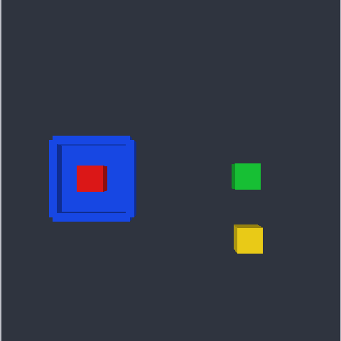
step 1lookno arguments0.0000 m · closed on airno reasoning text on this step
status : ok aperture (m) : 0.0000 [closed on air] ee_position : [-0.268, -0.000, 0.411] visible ids : red_cube_1 (middle-left of the overhead photo), green_cube_1 (middle-right of the overhead photo), blue_bowl_1 (middle-left of the overhead photo), yellow_cube_1 (bottom-right of the overhead photo) sim_steps : 1
not checked -
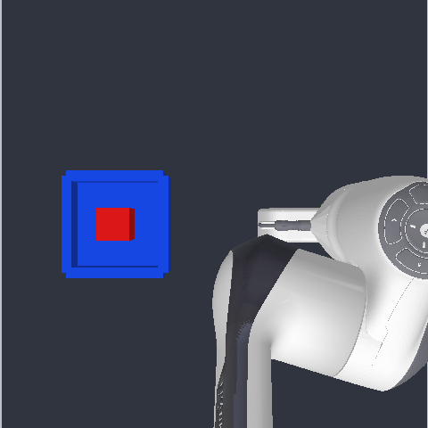
step 2graspobject_id='green_cube_1'0.0442 m · holdingno reasoning text on this step
status : ok aperture (m) : 0.0442 [holding] ee_position : [-0.012, -0.151, 0.194] visible ids : red_cube_1 (middle-left of the overhead photo), blue_bowl_1 (middle-left of the overhead photo) sim_steps : 77
passed -
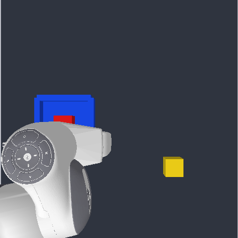
step 3placetarget_id='blue_bowl_1'0.0800 m · open / emptyno reasoning text on this step
status : ok aperture (m) : 0.0800 [open / empty] ee_position : [-0.049, 0.117, 0.195] visible ids : red_cube_1 (middle-left of the overhead photo), blue_bowl_1 (middle-left of the overhead photo), yellow_cube_1 (bottom-right of the overhead photo) sim_steps : 157
passed -
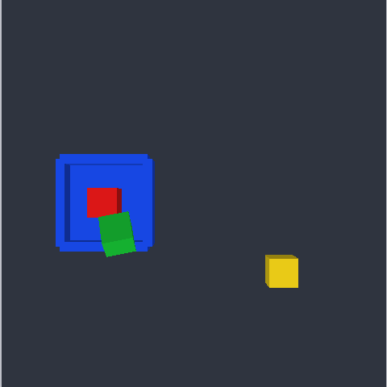
step 4lookno arguments0.0800 m · open / emptyno reasoning text on this step
status : ok aperture (m) : 0.0800 [open / empty] ee_position : [-0.272, 0.002, 0.405] visible ids : red_cube_1 (middle-left of the overhead photo), green_cube_1 (middle-left of the overhead photo), blue_bowl_1 (middle-left of the overhead photo), yellow_cube_1 (bottom-right of the overhead photo) sim_steps : 158
passed -
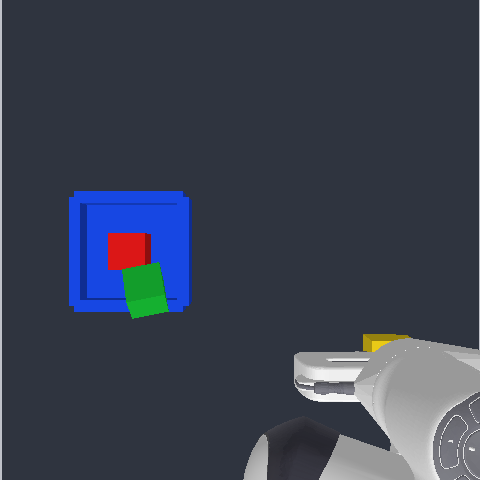
step 5graspobject_id='yellow_cube_1'0.0484 m · holdingno reasoning text on this step
status : ok aperture (m) : 0.0484 [holding] ee_position : [-0.136, -0.156, 0.195] visible ids : red_cube_1 (middle-left of the overhead photo), green_cube_1 (middle-left of the overhead photo), blue_bowl_1 (middle-left of the overhead photo), yellow_cube_1 (bottom-right of the overhead photo) sim_steps : 237
passed -
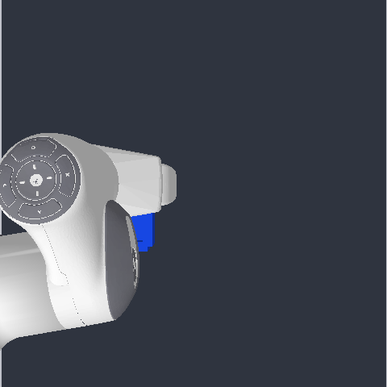
step 6placetarget_id='blue_bowl_1'0.0800 m · open / emptyno reasoning text on this step
status : ok aperture (m) : 0.0800 [open / empty] ee_position : [0.010, 0.123, 0.196] visible ids : blue_cube_1 (middle-centre of the overhead photo) sim_steps : 319
passed -
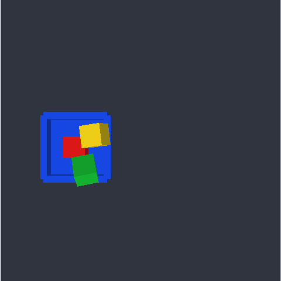
step 7lookno arguments0.0800 m · open / emptyno reasoning text on this step
status : ok aperture (m) : 0.0800 [open / empty] ee_position : [-0.271, 0.001, 0.410] visible ids : red_cube_1 (middle-left of the overhead photo), green_cube_1 (middle-left of the overhead photo), blue_bowl_1 (middle-left of the overhead photo), yellow_cube_1 (middle-centre of the overhead photo) sim_steps : 320
passed -
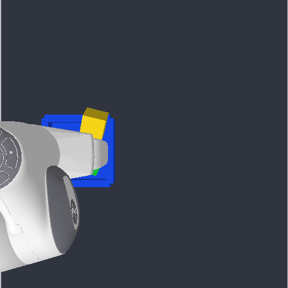
step 8graspobject_id='red_cube_1'0.0597 m · holdingno reasoning text on this step
status : ok aperture (m) : 0.0597 [holding] ee_position : [-0.016, 0.164, 0.195] visible ids : blue_cube_1 (middle-left of the overhead photo), blue_cube_2 (middle-centre of the overhead photo), yellow_cube_1 (middle-left of the overhead photo) sim_steps : 488
passed -
 step 9
step 9lookno arguments0.0605 m · between bandsno reasoning text on this step
status : ok aperture (m) : 0.0605 [between bands] ee_position : [-0.270, 0.003, 0.404] visible ids : green_cube_1 (middle-left of the overhead photo), blue_bowl_1 (middle-left of the overhead photo), yellow_cube_1 (middle-left of the overhead photo) sim_steps : 489
passed -
 step 10
step 10lookno arguments0.0605 m · between bandsno reasoning text on this step
status : ok aperture (m) : 0.0605 [between bands] ee_position : [-0.270, 0.003, 0.404] visible ids : green_cube_1 (middle-left of the overhead photo), blue_bowl_1 (middle-left of the overhead photo), yellow_cube_1 (middle-left of the overhead photo) sim_steps : 490
passed -
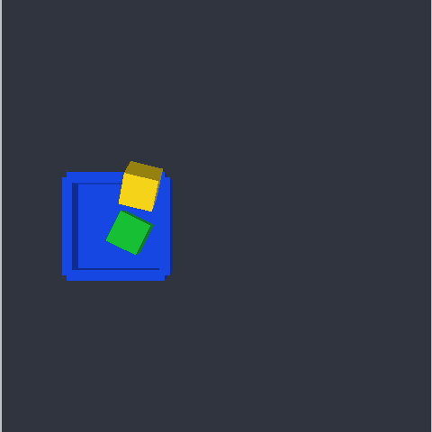
step 11lookno arguments0.0605 m · between bandsno reasoning text on this step
status : ok aperture (m) : 0.0605 [between bands] ee_position : [-0.270, 0.003, 0.404] visible ids : green_cube_1 (middle-left of the overhead photo), blue_bowl_1 (middle-left of the overhead photo), yellow_cube_1 (middle-left of the overhead photo) sim_steps : 491
passed -
 step 12
step 12graspobject_id='green_cube_1'0.0605 m · between bandsno reasoning text on this step
status : error error : already_holding: the gripper is already holding a block (aperture 0.0605 m). Place it before grasping another. aperture (m) : 0.0605 [between bands] ee_position : [-0.270, 0.003, 0.404] visible ids : green_cube_1 (middle-left of the overhead photo), blue_bowl_1 (middle-left of the overhead photo), yellow_cube_1 (middle-left of the overhead photo) sim_steps : 491
L1 objectedalready_holding: the gripper is already holding a block (aperture 0.0605 m). Place it before grasping another. -
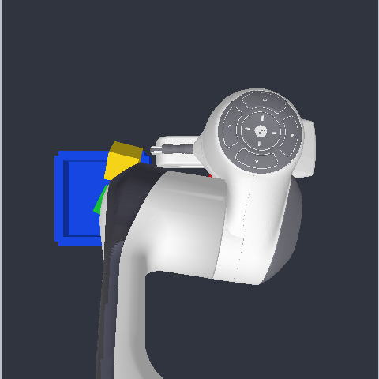
step 13placetarget_id='yellow_cube_1'0.0800 m · open / emptyno reasoning text on this step
status : ok aperture (m) : 0.0800 [open / empty] ee_position : [0.046, -0.057, 0.196] visible ids : green_cube_1 (middle-left of the overhead photo), blue_cube_1 (middle-centre of the overhead photo), blue_bowl_1 (middle-left of the overhead photo), yellow_cube_1 (middle-left of the overhead photo) sim_steps : 577
L3 objectedvisual check failed: Is the block inside the yellow cube 1? -> no The yellow cube is a solid block, not a container. -
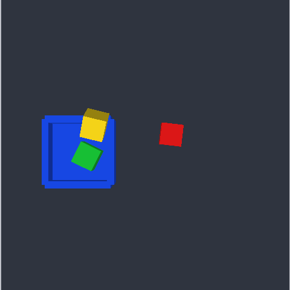
step 14lookno arguments0.0800 m · open / emptyno reasoning text on this step
status : ok aperture (m) : 0.0800 [open / empty] ee_position : [-0.266, -0.001, 0.411] visible ids : red_cube_1 (middle-centre of the overhead photo), green_cube_1 (middle-left of the overhead photo), blue_bowl_1 (middle-left of the overhead photo), yellow_cube_1 (middle-left of the overhead photo) sim_steps : 578
passed -
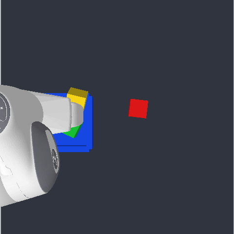
step 15placetarget_id='blue_bowl_1'0.0800 m · open / emptyno reasoning text on this step
status : ok aperture (m) : 0.0800 [open / empty] ee_position : [0.004, 0.173, 0.196] visible ids : red_cube_1 (middle-centre of the overhead photo), green_cube_1 (middle-left of the overhead photo), blue_cube_1 (middle-left of the overhead photo), blue_cube_2 (middle-centre of the overhead photo), yellow_cube_1 (middle-left of the overhead photo) sim_steps : 662
passed -
step 16
lookno arguments0.0800 m · open / emptyno reasoning text on this step
status : ok aperture (m) : 0.0800 [open / empty] ee_position : [-0.271, 0.002, 0.409] visible ids : red_cube_1 (middle-centre of the overhead photo), green_cube_1 (middle-left of the overhead photo), blue_bowl_1 (middle-left of the overhead photo), yellow_cube_1 (middle-left of the overhead photo) sim_steps : 663
passed -
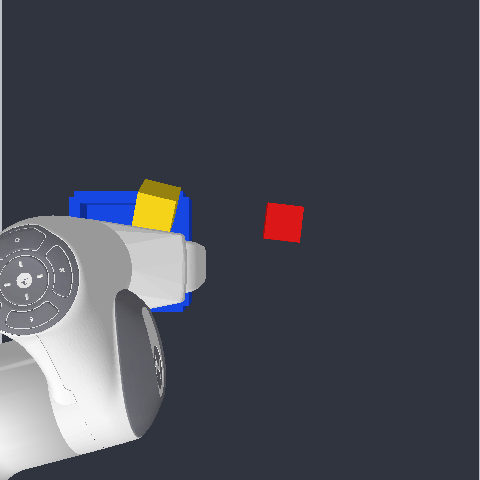
step 17graspobject_id='green_cube_1'0.0510 m · holdingno reasoning text on this step
status : ok aperture (m) : 0.0510 [holding] ee_position : [-0.026, 0.137, 0.195] visible ids : red_cube_1 (middle-centre of the overhead photo), blue_cube_1 (middle-left of the overhead photo), blue_cube_2 (middle-centre of the overhead photo), blue_cube_3 (middle-centre of the overhead photo), yellow_cube_1 (middle-left of the overhead photo) sim_steps : 831
passed -
step 18
lookno arguments0.0510 m · holdingno reasoning text on this step
status : ok aperture (m) : 0.0510 [holding] ee_position : [-0.270, 0.002, 0.405] visible ids : red_cube_1 (middle-centre of the overhead photo), blue_bowl_1 (middle-left of the overhead photo), yellow_cube_1 (middle-left of the overhead photo) sim_steps : 832
passed -
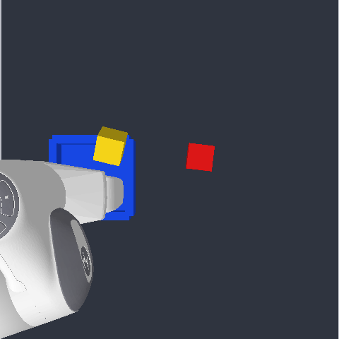
step 19placetarget_id='blue_bowl_1'0.0800 m · open / emptyno reasoning text on this step
status : ok aperture (m) : 0.0800 [open / empty] ee_position : [-0.034, 0.170, 0.195] visible ids : red_cube_1 (middle-centre of the overhead photo), blue_bowl_1 (middle-left of the overhead photo), yellow_cube_1 (middle-left of the overhead photo) sim_steps : 914
passed -
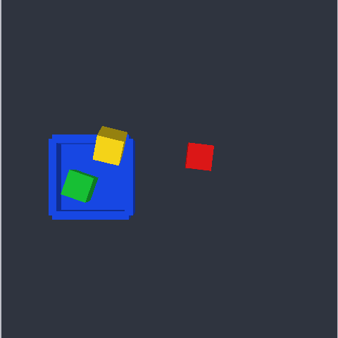
step 20lookno arguments0.0800 m · open / emptyno reasoning text on this step
status : ok aperture (m) : 0.0800 [open / empty] ee_position : [-0.271, 0.003, 0.404] visible ids : red_cube_1 (middle-centre of the overhead photo), green_cube_1 (middle-left of the overhead photo), blue_bowl_1 (middle-left of the overhead photo), yellow_cube_1 (middle-left of the overhead photo) sim_steps : 915
passed -
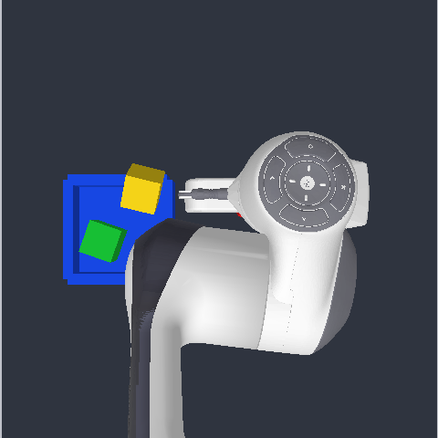
step 21graspobject_id='red_cube_1'0.0462 m · holdingno reasoning text on this step
status : ok aperture (m) : 0.0462 [holding] ee_position : [0.025, -0.061, 0.195] visible ids : green_cube_1 (middle-left of the overhead photo), blue_bowl_1 (middle-left of the overhead photo), yellow_cube_1 (middle-left of the overhead photo) sim_steps : 993
passed -
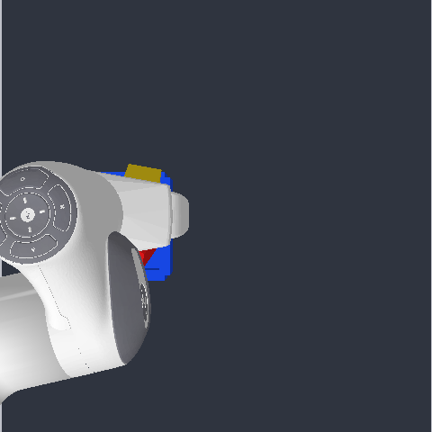
step 22placetarget_id='blue_bowl_1'0.0800 m · open / emptyno reasoning text on this step
status : ok aperture (m) : 0.0800 [open / empty] ee_position : [0.000, 0.133, 0.195] visible ids : red_cube_1 (middle-centre of the overhead photo), blue_cube_1 (middle-centre of the overhead photo), blue_cube_2 (middle-centre of the overhead photo), yellow_cube_1 (middle-left of the overhead photo) sim_steps : 1071
passed -
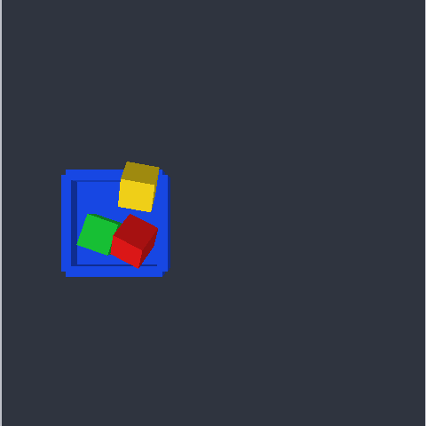
step 23lookno arguments0.0800 m · open / emptyno reasoning text on this step
status : ok aperture (m) : 0.0800 [open / empty] ee_position : [-0.268, 0.002, 0.405] visible ids : red_cube_1 (middle-left of the overhead photo), green_cube_1 (middle-left of the overhead photo), blue_bowl_1 (middle-left of the overhead photo), yellow_cube_1 (middle-left of the overhead photo) sim_steps : 1072
passed -
 step 24
step 24lookno arguments0.0800 m · open / emptyno reasoning text on this step
status : ok aperture (m) : 0.0800 [open / empty] ee_position : [-0.268, 0.002, 0.405] visible ids : red_cube_1 (middle-left of the overhead photo), green_cube_1 (middle-left of the overhead photo), blue_bowl_1 (middle-left of the overhead photo), yellow_cube_1 (middle-left of the overhead photo) sim_steps : 1073
passed -
 step 25
step 25ask_humanquestion='Which block (red, green, or yellow) was already in the bowl when the task started?'0.0800 m · open / emptyno reasoning text on this step
status : ok aperture (m) : 0.0800 [open / empty] ee_position : [-0.268, 0.002, 0.405] visible ids : red_cube_1 (middle-left of the overhead photo), green_cube_1 (middle-left of the overhead photo), blue_bowl_1 (middle-left of the overhead photo), yellow_cube_1 (middle-left of the overhead photo) sim_steps : 1073 note : human replied: The operator has no additional instruction for this task -- the original instruction is all the information available.
passed